BC-Bench — AL extension benchmark
sources: 2026-06-23-120700-darts_replay · 2026-06-23-120700-darts_replay · 2026-06-23-120700-darts_replay
Overall ranking
Score by task
| Task | Codex (GPT-5 CLI) | Claude Code | Darts |
|---|---|---|---|
| Hotel Management 02-hotel-management | 6.7 | 7.0 | 7.3 |
| Average | 6.70 | 7.00 | 7.30 |
Average score by axis
| Axis | Weight | Codex (GPT-5 CLI) | Claude Code | Darts |
|---|---|---|---|---|
| Functional correctness | 50% | 6.60 | 8.30 | 6.20 |
| Code quality | 10% | 2.90 | 4.30 | 7.10 |
| Spec understanding | 10% | 10.00 | 6.20 | 10.00 |
| Production readiness | 20% | 7.20 | 5.60 | 8.90 |
Each axis is scored deterministically by max-scaling the per-criterion levels: 10 × Σ(weight × level) ÷ Σ(weight × 3). The overall score is a weighted blend — Functional correctness (50%), Code quality (10%), Spec understanding (10%) and, where a task defines it, Production readiness (20%) — normalized over the axes a task was actually graded on.
Hotel Management
Reservation lifecycle: room inventory, deposit, check-in, service charges, checkout posting with VAT.
Click any criterion to expand — each agent’s council verdict, individual grader votes, reasoning, and evidence (screenshots, OData queries, code).
›F-01Reservation No. and Invoice No. come from configured No. Series, and posting G/L accounts come from a configurable setup table, rather than being hardcoded in business logic.FailPassPass
Opus 4.7 · run 0Fail
table 50100 "Hotel Setup"
... fields { ... "VAT Rate %" ... "Room Revenue G/L Account" ... "Service Revenue G/L Account" ... "Deposit Clearing G/L Account" ... }
// NO "Reservation Nos." Code[20] series field, NO "Invoice Nos." series fieldfield(1; "Reservation No."; Code[20]) { Caption = 'Reservation No.'; NotBlank = true; }
... trigger OnInsert() begin if Status = Status::Closed then Error(...); Status := Status::Confirmed; TestMandatoryFields(); end;
// no NoSeriesMgt.InitSeries / GetNextNo0 — No. Series module never invokedOpus 4.7 · run 0Pass
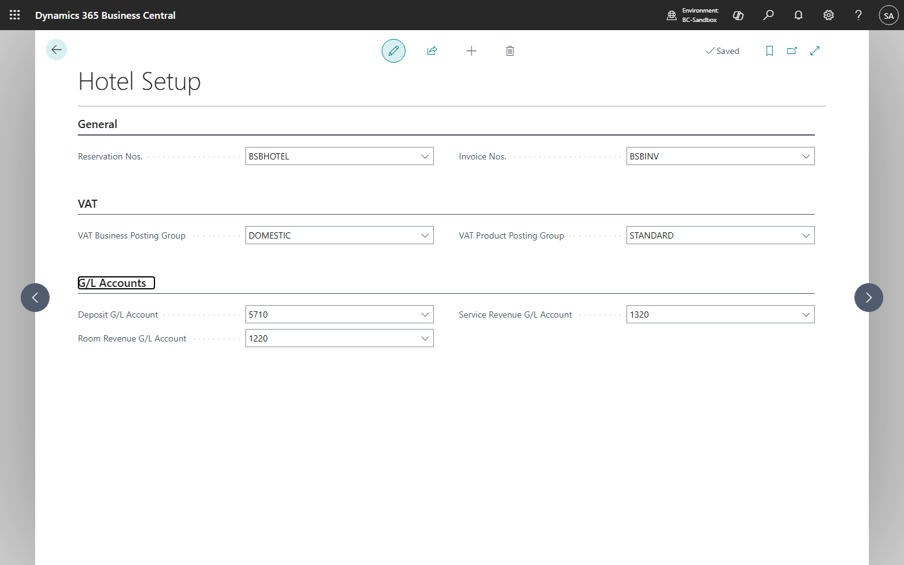
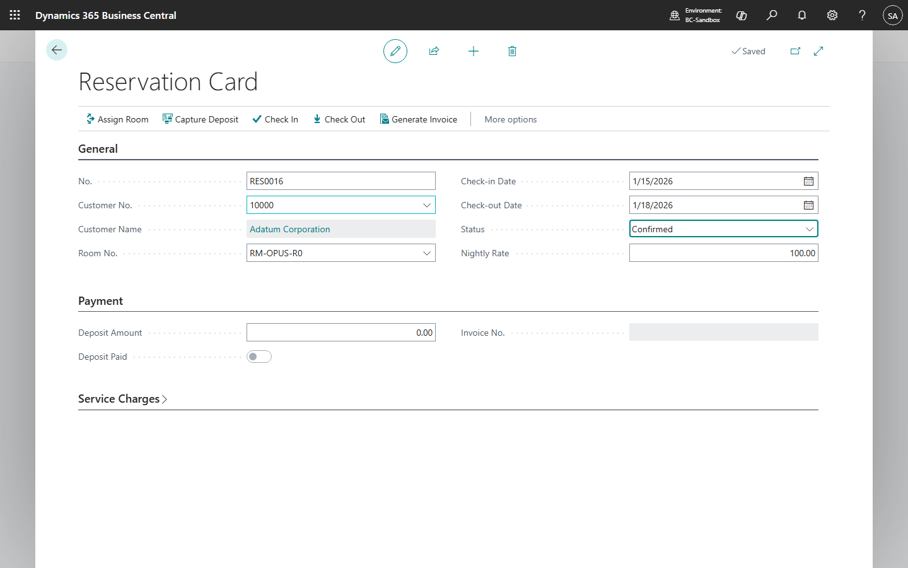
trigger OnInsert()
var HotelSetup: Record "Hotel Setup"; NoSeries: Codeunit "No. Series";
begin
HotelSetup.Get(); HotelSetup.TestField("Reservation Nos.");
"No." := NoSeries.GetNextNo(HotelSetup."Reservation Nos.", WorkDate());
end;HotelSetup.Get();
HotelSetup.TestField("Invoice Nos.");
HotelSetup.TestField("Room Revenue G/L Account");
SalesHeader."No." := NoSeries.GetNextNo(HotelSetup."Invoice Nos.", WorkDate());Opus 4.7 · run 0Pass
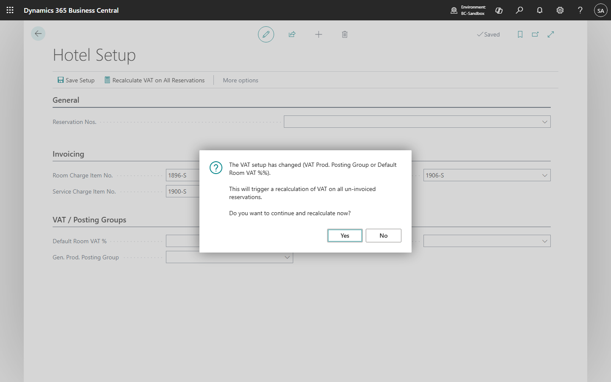

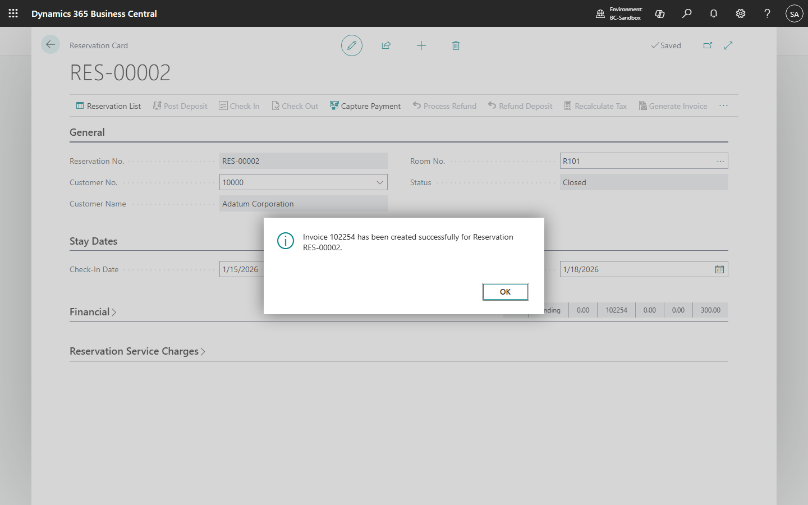
trigger OnInsert()
begin
if "Reservation No." = '' then begin
"No. Series" := GetNoSeriesCode();
"Reservation No." := NoSeries.GetNextNo("No. Series");field(2; "Reservation Nos."; Code[20]) { TableRelation = "No. Series"; }
field(3; "Room Charge Item No."; ...) TableRelation=Item
field(7; "VAT Prod. Posting Group"; ...)SalesHeader.Insert(true); // Assigns Document No. from Sales invoice no. series
SalesHeader.Validate("Sell-to Customer No.", ReservationHeader."Customer No.");›F-02A Reservation table exists carrying the minimum reservation data and a status field.PassPassPass
Opus 4.7 · run 0Pass
table 50102 "Hotel Reservation" { fields { field(1; "Reservation No."; Code[20]) ... field(10; "Customer No."; ...) field(20; "Room No."; ...) field(30; "Check-in Date"; Date) field(31; "Check-out Date"; Date) field(40; Status; Enum "Hotel Reservation Status") field(50; "Deposit Amount"; Decimal) field(60; "Invoice No."; Code[20]) ...} }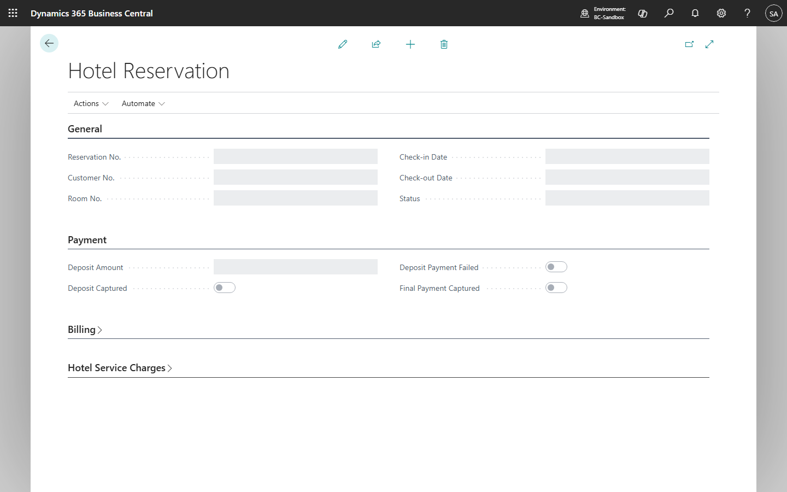
Opus 4.7 · run 0Pass
field(1; "No."); field(10; "Customer No."); field(20; "Room No."); field(30; "Check-in Date"); field(31; "Check-out Date"); field(40; Status; Enum "Hotel Reservation Status"); field(50; "Deposit Amount"); field(60; "Invoice No.")Opus 4.7 · run 0Pass
field(1; "Reservation No."; Code[20])
field(2; "Customer No."; Code[20])
field(4; "Room No."; Code[20])
field(5; "Check-In Date"; Date)
field(6; "Check-Out Date"; Date)
field(7; "Status"; Enum "Hotel Reservation Status")
field(8; "Deposit Amount"; Decimal)
field(11; "Invoice No."; Code[20])›F-03A Room inventory table exists carrying the minimum room data and an occupancy flag.PassPassPass
Opus 4.7 · run 0Pass
table 50101 "Hotel Room" { fields { field(1; "Room No."; Code[20]) field(10; "Room Type"; Enum "Hotel Room Type") field(20; "Nightly Rate"; Decimal) field(30; Occupied; Boolean) field(40; "Current Reservation No."; Code[20]) ... } }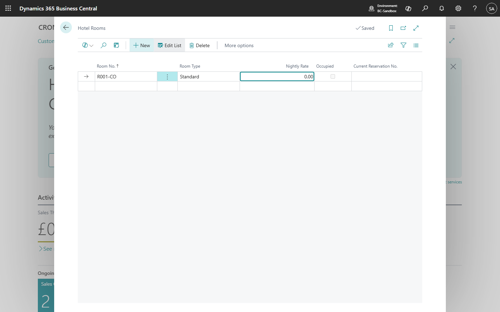
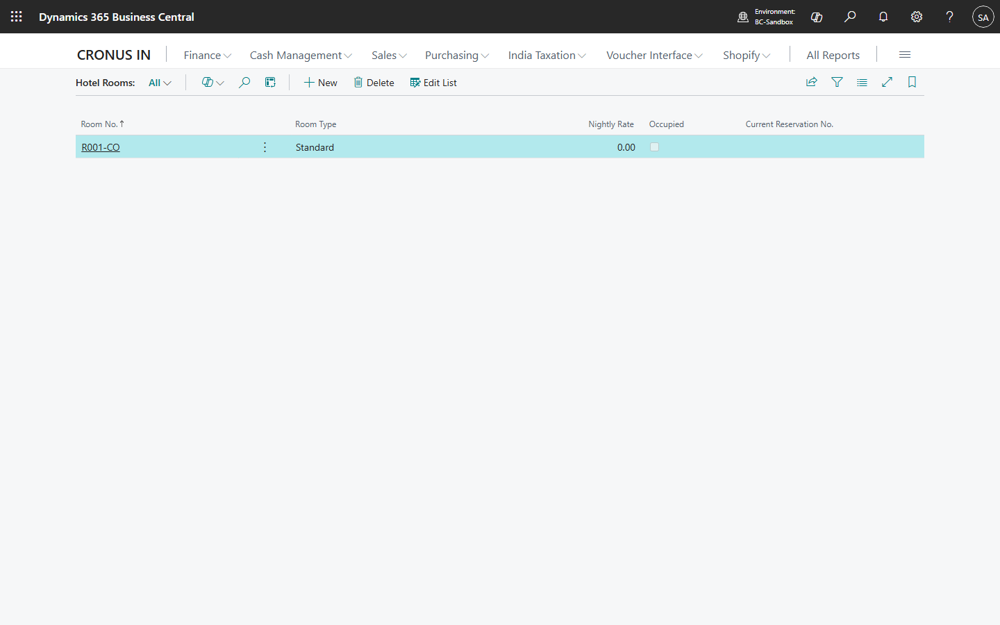
Opus 4.7 · run 0Pass
field(1; "No."; Code[20]); field(10; "Room Type"; Code[20]); field(20; "Nightly Rate"; Decimal); field(30; Occupied; Boolean)Opus 4.7 · run 0Pass
field(1; "Room No."; Code[20])
field(2; "Room Type"; Enum "Room Type")
field(3; "Nightly Rate"; Decimal)
field(4; "Occupied"; Boolean)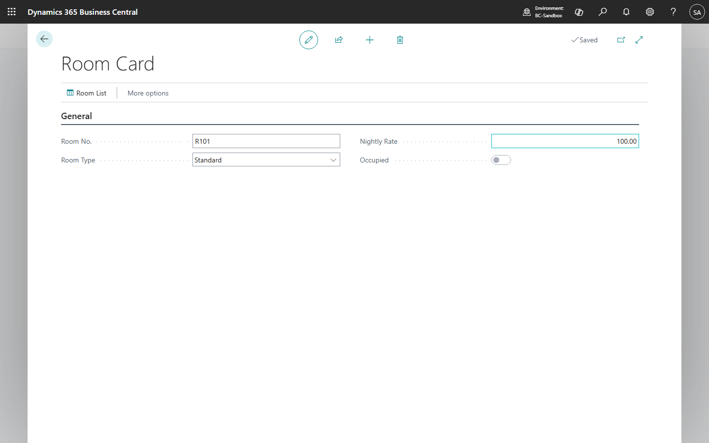
›F-04A reservation can be created with a room assigned and an initial Confirmed status.PassPassPass
Opus 4.7 · run 0Pass UI navigation failed
trigger OnInsert() begin
if Status = Status::Closed then Error('New reservations cannot be closed.');
Status := Status::Confirmed;
TestMandatoryFields();
end;Opus 4.7 · run 0Pass

"No." := NoSeries.GetNextNo(HotelSetup."Reservation Nos.", WorkDate());
Status := Status::Confirmed;Opus 4.7 · run 0Pass
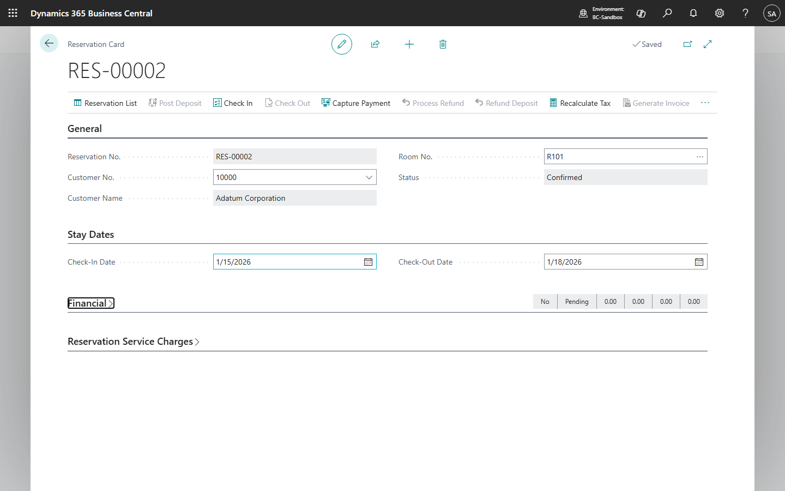
trigger OnNewRecord(BelowxRec: Boolean)
begin
Rec."Status" := "Hotel Reservation Status"::Confirmed;
end;›F-05Overbooking is prevented when a room is reserved for dates overlapping an existing active reservation.PassPassFail
Opus 4.7 · run 0Pass UI navigation failed
procedure IsRoomAvailable(RoomNo; CheckInDate; CheckOutDate; ExcludeReservationNo): Boolean
begin
Reservation.SetRange("Room No.", RoomNo);
Reservation.SetFilter(Status, '<>%1', Reservation.Status::Closed);
if Reservation.FindSet() then repeat
if Reservation."Reservation No." <> ExcludeReservationNo then
if (Reservation."Check-in Date" < CheckOutDate) and (Reservation."Check-out Date" > CheckInDate) then
exit(false);
until ...;field(20; "Room No."; ...) { trigger OnValidate() var HotelMgt: Codeunit "Hotel Reservation Mgt."; begin if "Room No." <> '' then HotelMgt.TestRoomAvailable("Room No.", "Check-in Date", "Check-out Date", "Reservation No."); end; }Opus 4.7 · run 0Pass
local procedure CheckRoomAvailability(...): Boolean
ExistingReservation.SetRange("Room No.", RoomNo);
ExistingReservation.SetFilter(Status, '<>%1', ExistingReservation.Status::Closed);
if (CheckInDate < Existing."Check-out Date") and (CheckOutDate > Existing."Check-in Date") then exit(false);if CheckRoomAvailability(...) then begin Reservation.Modify(true);
else Error('Room %1 is not available for the selected dates.', Reservation."Room No.");Opus 4.7 · run 0Fail
procedure CheckAvailabilityOrError(ReservationHeader: Record "Reservation Header")
begin
if not CheckAvailability(...) then
Error('Overbooking prevented: Room %1 is already reserved by another guest for a period that overlaps %2 to %3.\\...',trigger OnValidate() // on Room No., Check-In Date, Check-Out Date
RoomAvailabilityCheck.CheckAvailabilityOrError(Rec);trigger OnInsert()/OnModify()
RoomAvailabilityCheck.CheckAvailabilityOrError(Rec);›F-06A deposit can be captured against a reservation and its captured/failed state is tracked.PassPassFail
Opus 4.7 · run 0Pass UI navigation failed
procedure CaptureDeposit(var Reservation; Amount; PaymentSucceeded: Boolean; ExternalReference)
begin
Reservation.TestField(Status, Reservation.Status::Confirmed);
if Amount <= 0 then Error('Deposit amount must be positive.');
InsertPaymentLedger(... ::Deposit, Amount, PaymentSucceeded, ...);
Reservation."Deposit Amount" := Amount;
Reservation."Deposit Captured" := PaymentSucceeded;
Reservation."Deposit Payment Failed" := not PaymentSucceeded;
Reservation.Modify(true);
if not PaymentSucceeded then Message('Deposit payment failed...');field(51; "Deposit Captured"; Boolean) { Editable = false; } field(52; "Deposit Payment Failed"; Boolean) { Editable = false; }Opus 4.7 · run 0Pass
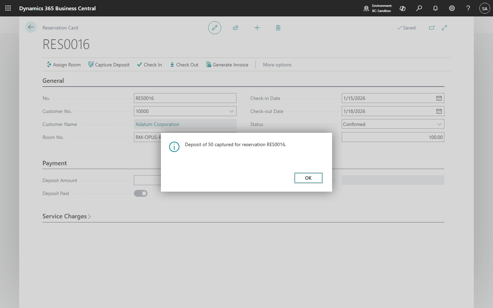
Reservation.TestField("Deposit Amount"); ...
if Reservation."Deposit Paid" then Error('Deposit has already been captured...');
Reservation."Deposit Paid" := true; Reservation.Modify(true);field(51; "Deposit Paid"; Boolean) { Editable = false; }Opus 4.7 · run 0Fail
procedure PostDeposit(...) if ReservationHeader."Deposit Amount" <= 0 then Error('...');
ReservationHeader.Validate("Deposit Captured", true);
ReservationHeader.Validate("Payment Status", "Hotel Payment Status"::Received);field(8; "Deposit Amount"; Decimal)
field(12; "Deposit Received"; Boolean)
field(17; "Payment Status"; Enum "Hotel Payment Status")
field(19; "Deposit Captured"; Boolean)›F-07Check-in transitions the reservation to Occupied and marks the assigned room occupied.PassPassPass
Opus 4.7 · run 0Pass UI navigation failed
procedure CheckIn(var Reservation)
begin
Reservation.TestField(Status, Reservation.Status::Confirmed);
Reservation.TestField("Deposit Captured", true);
Reservation.TestField("Room No.");
TestRoomAvailable(...);
Room.Get(Reservation."Room No.");
Room.Occupied := true;
Room."Current Reservation No." := Reservation."Reservation No.";
Room.Modify(true);
Reservation.Status := Reservation.Status::Occupied;
Reservation.Modify(true);Opus 4.7 · run 0Pass
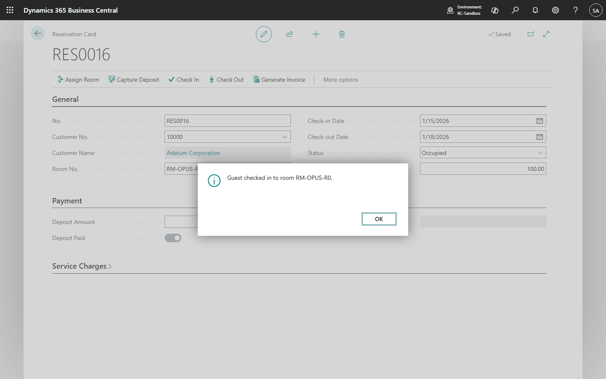
Room.Get(Reservation."Room No.");
Room.SetOccupied(true);
Reservation.Status := Reservation.Status::Occupied;
Reservation.Modify(true);Opus 4.7 · run 0Pass
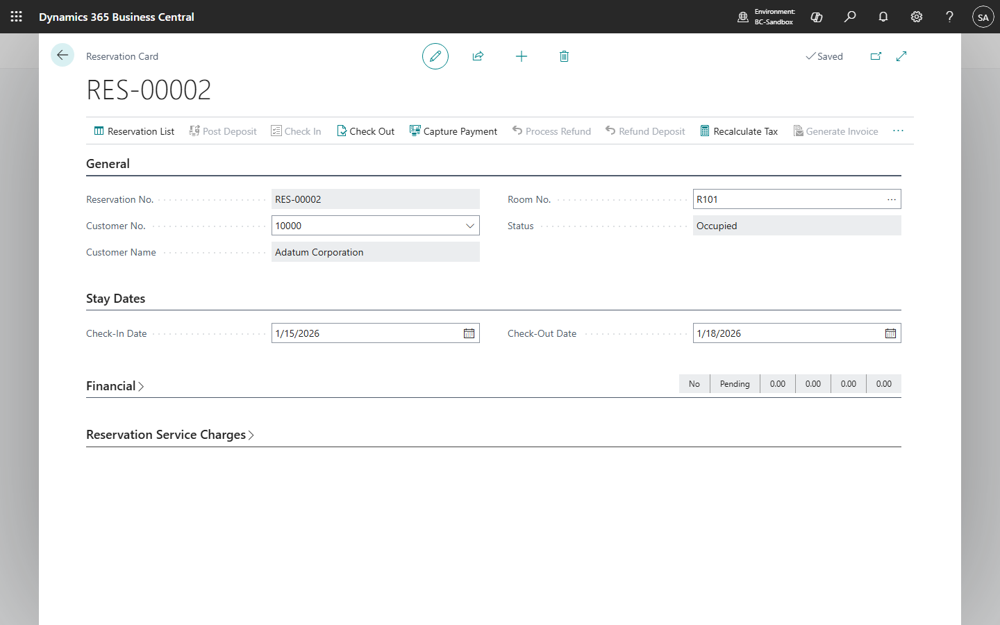
ReservationHeader.Validate(Status, "Hotel Reservation Status"::Occupied);
ReservationHeader.Modify(true);procedure UpdateRoomOccupancy(...) // fires from Status OnValidate to set Room.Occupied›F-08Service charge lines (e.g. breakfast, laundry, transfer) can be stored against a reservation.PassPassFail
Opus 4.7 · run 0Pass UI navigation failed
table 50103 "Hotel Service Charge" { fields { field(1; "Reservation No."; Code[20]) { TableRelation = "Hotel Reservation"; } field(2; "Line No."; Integer) field(10; "Service Type"; Enum "Hotel Service Type") field(20; Description; Text[100]) field(30; Amount; Decimal) field(40; Billable; Boolean) ... } keys { key(PK; "Reservation No.", "Line No.") } }Opus 4.7 · run 0Pass
field(1; "Reservation No."; TableRelation = Reservation);
field(2; "Line No."; Integer); field(10; Description; Text[100]);
field(20; Amount; Decimal); field(30; "Service Date"; Date);
key(PK; "Reservation No.", "Line No.")page 50105 "Service Charge Subpage" { PageType = ListPart; SourceTable = "Service Charge"; AutoSplitKey = true; ... field(Description); field(Amount); field("Service Date")part(ServiceCharges; "Service Charge Subpage") { SubPageLink = "Reservation No." = field("No."); }Opus 4.7 · run 0Fail
field(1; "Reservation No."; Code[20]) TableRelation = "Reservation Header"
field(10; "Service Type"; Enum "Hotel Service Type")
field(6; "Amount"; Decimal)page 50113 "Reservation Service Charges" PageType = ListPart; SourceTable = "Reservation Service Charge"; ... field("Service Type"; Rec."Service Type")›F-09Checkout generates a single invoice, calculates VAT, posts the financial result, closes the reservation and releases the room.FailFailPass
Opus 4.7 · run 0Fail
procedure Checkout(var Reservation)
begin
Reservation.TestField(Status, Reservation.Status::Occupied);
if Room.Get(...) then begin Room.Occupied := false; Clear(Room."Current Reservation No."); Room.Modify(true); end;
Reservation.Status := Reservation.Status::Closed;
Reservation.Modify(true);
end;
// Checkout does NOT generate the invoice — that is a SEPARATE actionprocedure GenerateInvoice(var Reservation)
...
SalesHeader.Init();
SalesHeader."Document Type" := SalesHeader."Document Type"::Invoice;
SalesHeader.Insert(true);
... InsertSalesLine(...)
Reservation."Invoice No." := SalesHeader."No.";
Reservation.Modify(true);
end;
// SalesPost.Run(SalesHeader) is NEVER invoked anywhere0Opus 4.7 · run 0Fail
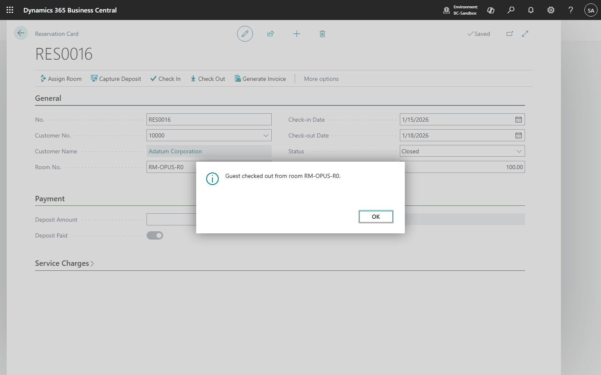
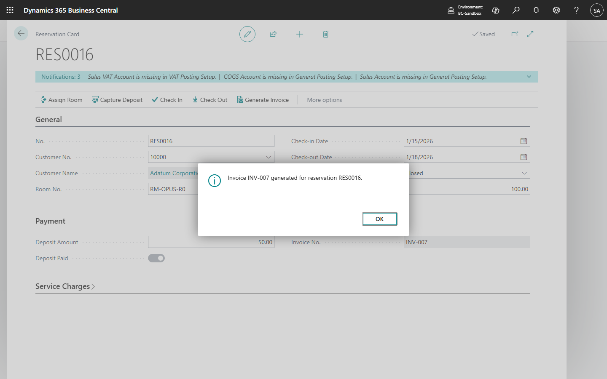
SalesHeader.Init(); SalesHeader."Document Type" := ...Invoice;
SalesHeader."No." := NoSeries.GetNextNo(...); SalesHeader.Insert(true);
... SalesLine.Insert(true); ... // NO Codeunit.Run(Codeunit::"Sales-Post", SalesHeader);
Reservation."Invoice No." := SalesHeader."No."; Reservation.Modify(true);Opus 4.7 · run 0Pass
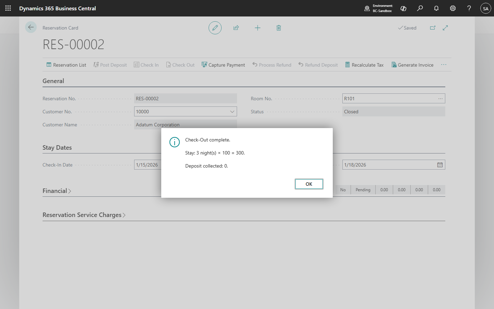
ReservationHeader.Validate(Status, "Hotel Reservation Status"::Closed);
ReservationHeader.Modify(true);if ReservationHeader."Invoice No." <> '' then
Error('Invoice generation is blocked for Reservation %1: invoice %2 has already been generated.');SalesHeader.Init(); SalesHeader.Validate("Document Type", SalesHeader."Document Type"::Invoice); SalesHeader.Insert(true);
SalesHeader.Validate("Sell-to Customer No.", ReservationHeader."Customer No."); SalesHeader.Modify(true);›F-10VAT is recalculated when tax configuration changes before the invoice is generated.FailPassFail
Opus 4.7 · run 0Fail
TaxableAmount := RoomAmount + ServiceAmount;
VATAmount := Round(TaxableAmount * Setup."VAT Rate %" / 100, 0.01);Setup.GetSetup();
Setup.TestField("VAT Bus. Posting Group"); Setup.TestField("VAT Prod. Posting Group");
CalculateTotals(Reservation, RoomAmount, ServiceAmount, VATAmount, TotalAmount);Opus 4.7 · run 0Pass
HotelSetup.Get(); HotelSetup.TestField("VAT Business Posting Group"); HotelSetup.TestField("VAT Product Posting Group");
... SalesLine."VAT Bus. Posting Group" := HotelSetup."VAT Business Posting Group";
SalesLine."VAT Prod. Posting Group" := HotelSetup."VAT Product Posting Group";Opus 4.7 · run 0Fail
procedure BulkRecalcUnInvoicedReservations(): Integer
ReservationHeader.SetRange("Invoice No.", '');
... CalcReservationVAT(ReservationHeader); UpdatedCount += 1;trigger OnModify() // detects VAT Prod. Posting Group or Default Room VAT % change
UpdatedCount := HotelVATCalculation.BulkRecalcUnInvoicedReservations();›F-11The deposit is applied against the final bill and the remaining amount due is settled.FailFailFail
Opus 4.7 · run 0Fail
if Reservation."Deposit Captured" and (Reservation."Deposit Amount" <> 0) then
InsertSalesLine(SalesHeader, SalesLine, LineNo, Setup."Deposit Clearing G/L Account", 'Deposit applied ' + Reservation."Reservation No.", -Reservation."Deposit Amount", Setup);procedure CaptureFinalPayment(var Reservation; Amount; PaymentSucceeded; ExternalReference)
begin
Reservation.TestField(Status, Reservation.Status::Closed);
Reservation.TestField("Invoice No.");
AmountDue := GetRemainingAmountDue(Reservation);
if Amount > AmountDue then Error('Final payment amount %1 exceeds remaining amount due %2.', ...);
InsertPaymentLedger(... ::"Final Payment", Amount, PaymentSucceeded, ...);
Reservation."Final Payment Captured" := PaymentSucceeded;
Reservation.Modify(true);Opus 4.7 · run 0Fail
if Reservation."Deposit Paid" and (Reservation."Deposit Amount" > 0) then begin
SalesLine.Type := SalesLine.Type::"G/L Account";
SalesLine.Validate("No.", HotelSetup."Deposit G/L Account");
SalesLine.Validate("Unit Price", -Reservation."Deposit Amount");
SalesLine.Insert(true); // never posted; no final-payment codeunit existsOpus 4.7 · run 0Fail
if DepositIsCaptured then begin // Deposit was captured — deduct it as a credit on the invoice
SalesLine.Validate("Unit Price", -ReservationHeader."Deposit Amount");
SalesLine.Insert(true);›C-01All custom objects fall within a single declared object-ID range registered in app.json.PassPassPass
Opus 4.7 · run 0Pass
enums 50100-50104, tables 50100-50105, codeunits 50100-50101, pages 50100-50106, permissionsets 50100-50102 — all within app.json idRanges 50100-99999"idRanges": [ { "from": 50100, "to": 99999 } ]Opus 4.7 · run 0Pass
idRanges: from=50100 to=99999; objects: Cod50100-50102, Tab50100-50103, Pag50100-50105, Enum50100, TabExt50100, PagExt50100 — all within 50100-99999Opus 4.7 · run 0Pass
idRanges 50100-99999; objects: Table 50100-50103,50106,50107; Enum 50100-50104; Codeunit 50100-50108; Page 50100-50113; PermissionSet 50100-50102; TableExt 50100. All within 50100-99999.›C-02User-facing page fields carry ToolTips.FailPassPass
Opus 4.7 · run 0Fail
0 ToolTip declarations across all 7 pages and ~55 page fieldsOpus 4.7 · run 0Pass
Every visible field on every page (HotelSetup, RoomList, RoomCard, ReservationList, ReservationCard, ServiceChargeSubpage, UserSetup ext) declares ToolTip = '...' — coverage 100% ≥ 80%Opus 4.7 · run 0Pass
Page tooltips total: ~73 fields, ~73 ToolTips (RoomList=5, RoomCard=5, ReservationList=21+ tooltips ≥13 fields, ReservationCard=30/21, HotelSetup=9 tooltips on ~7 fields, ReservationServiceCharges=13/11). Ratio >> 80%.›C-03Table fields declare a DataClassification.PassPassPass
Opus 4.7 · run 0Pass
7 hits: 6 table-level (CustomerContent on every custom table) + 1 field-level (EndUserIdentifiableInformation on Authorized User ID)table 50100 "Hotel Setup" { ... DataClassification = CustomerContent; ... }
table 50101 "Hotel Room" { ... DataClassification = CustomerContent; ... }Opus 4.7 · run 0Pass
Every custom table field on HotelSetup, Room, Reservation, ServiceCharge and the User Setup tableextension declares DataClassification = CustomerContent — coverage 100% ≥ 90%Opus 4.7 · run 0Pass
55 DataClassification declarations across 7 table files; every visible field has DataClassification = CustomerContent (or EndUserIdentifiableInformation on Validated By). Coverage = 100% of custom table fields.›C-04Numbering and posting reuse standard BC platform modules rather than bespoke implementations.FailFailPass
Opus 4.7 · run 0Fail
00SalesHeader.Init();
SalesHeader."Document Type" := ::Invoice;
SalesHeader.Insert(true); // ← inserts Sales Header (Sales No. Series used by the platform), but…
// …Sales-Post (Run) is NEVER called — invoice stays unpostedOpus 4.7 · run 0Fail
NoSeries: Codeunit "No. Series";
"No." := NoSeries.GetNextNo(HotelSetup."Reservation Nos.", WorkDate()); // standard No. Series ✓GenJnlLine.Init(); ... GenJnlLine.Insert(true); // direct INSERT into Gen. Journal Line — never posted via GenJnlPostLineSalesHeader.Insert(true); ... SalesLine.Insert(true); // never SalesPost.Run / Codeunit::"Sales-Post"Opus 4.7 · run 0Pass
"No. Series" := GetNoSeriesCode();
"Reservation No." := NoSeries.GetNextNo("No. Series"); // Codeunit "No. Series"SalesHeader.Insert(true); // standard BC Sales Header — assigns Document No. from standard Sales Invoice no. series; posts via standard sales invoice engine›C-05Key lifecycle transitions expose integration events for extensibility.FailFailFail
Opus 4.7 · run 0Fail
0Opus 4.7 · run 0Fail
0 matches — no integration/business events declared anywhere in the extensionOpus 4.7 · run 0Fail
No matches found.›C-06Operational outcomes emit telemetry via the platform session log.FailFailFail
Opus 4.7 · run 0Fail
0Opus 4.7 · run 0Fail
0 matches — no telemetry emission anywhere in the extensionOpus 4.7 · run 0Fail
No matches found.›S-01The solution models all required domain tables: reservation, room inventory, and service charges.PassPassPass
Opus 4.7 · run 0Pass
table 50101 "Hotel Room" ...
table 50102 "Hotel Reservation" ...
table 50103 "Hotel Service Charge" ...Opus 4.7 · run 0Pass
Three distinct tables: Room (50101), Reservation (50102), Service Charge (50103) — plus HotelSetup config table (50100)Opus 4.7 · run 0Pass
3 distinct tables: Room (50100), Reservation Header (50101), Reservation Service Charge (50103).›S-02Reservation status is modelled as an enum with the required Confirmed, Occupied and Closed values.PassPassPass
Opus 4.7 · run 0Pass
enum 50100 "Hotel Reservation Status" { Extensible = true; value(0; Confirmed) value(1; Occupied) value(2; Closed) }field(40; Status; Enum "Hotel Reservation Status") { Caption = 'Status'; Editable = false; }Opus 4.7 · run 0Pass
enum 50100 "Hotel Reservation Status" { value(0; Confirmed); value(1; Occupied); value(2; Closed); }field(40; Status; Enum "Hotel Reservation Status")Opus 4.7 · run 0Pass
enum 50101 "Hotel Reservation Status"
value(0; "Confirmed") value(1; "Occupied") value(2; "Closed")field(7; "Status"; Enum "Hotel Reservation Status")›S-03Distinct permission sets reflect the Front Desk, Finance and Admin roles.PassFailPass
Opus 4.7 · run 0Pass
permissionset 50100 "HOTEL FRONT DESK" { ... tabledata "Hotel Reservation" = RIMD, ... codeunit "Hotel Reservation Mgt." = X; }
permissionset 50101 "HOTEL FINANCE" { ... tabledata "Hotel Setup" = R, tabledata "Sales Header" = RIMD, ... codeunit "Hotel Security Mgt." = X; }
permissionset 50102 "HOTEL ADMIN" { ... tabledata "Hotel Setup" = RIMD, ... page "Hotel User Role Setup" = X; }Opus 4.7 · run 0Fail
no permissionset object file in src/; 0 'permissionset' declarations across all AL — only a single Boolean 'Allow Refund Processing' field on the User Setup tableextensionOpus 4.7 · run 0Pass
HOTEL-ADMIN: RIMD on all + all codeunits. HOTEL-FRONTDESK: R on Hotel Setup, Process Refund NOT listed, X on FrontDesk Role Center. HOTEL-FINANCE: RIMD on Hotel Setup, X on Process Refund + Finance Role Center.›S-04Deposit and payment handling is modelled including application of the deposit to the final bill.PassPassPass
Opus 4.7 · run 0Pass
field(50; "Deposit Amount"; Decimal)
field(51; "Deposit Captured"; Boolean)
field(52; "Deposit Payment Failed"; Boolean)if Reservation."Deposit Captured" and (Reservation."Deposit Amount" <> 0) then
InsertSalesLine(..., Setup."Deposit Clearing G/L Account", 'Deposit applied ' + Reservation."Reservation No.", -Reservation."Deposit Amount", ...);Opus 4.7 · run 0Pass
field(50; "Deposit Amount"); field(51; "Deposit Paid"; Boolean)if Reservation."Deposit Paid" and (Reservation."Deposit Amount" > 0) then begin
... SalesLine.Validate("Unit Price", -Reservation."Deposit Amount"); // deposit subtracted from invoiceOpus 4.7 · run 0Pass
field(8; "Deposit Amount")
field(12; "Deposit Received")
field(17; "Payment Status" Enum)
field(19; "Deposit Captured")
field(20; "Amount Paid")if Deposit Amount>0 and DepositIsCaptured then add negative SalesLine UnitPrice=-Deposit Amount (deposit credit)›S-05All four named negative cases are explicitly handled: overbooking, failed payment, duplicate invoice and unauthorized refund.PassFailPass
Opus 4.7 · run 0Pass
// Overbooking guard
if (Reservation."Check-in Date" < CheckOutDate) and (Reservation."Check-out Date" > CheckInDate) then exit(false);
Error('Room %1 is already assigned to an overlapping reservation.', ...);// Failed payment guard
Reservation."Deposit Captured" := PaymentSucceeded;
Reservation."Deposit Payment Failed" := not PaymentSucceeded;
if not PaymentSucceeded then Message('Deposit payment failed. The reservation was not marked as paid.');// Duplicate invoice guard
if Reservation."Invoice No." <> '' then Error('Invoice %1 has already been generated for reservation %2.', ...);// Unauthorized refund guard
codeunit "Hotel Security Mgt." procedure RequireFinance() begin if not IsFinanceUser() then Error('Refund processing is restricted to Finance and Admin hotel roles.'); end;
// ProcessRefund(): SecurityMgt.RequireFinance();Opus 4.7 · run 0Fail
CheckRoomAvailability + Error('Room ... is not available') — overbooking guard ✓if Reservation."Invoice No." <> '' then Error('Invoice has already been generated...'); — duplicate-invoice guard ✓if not PermissionMgt.CanProcessRefund() then Error('You do not have permission to process refunds...'); — unauthorized-refund guard ✓GenJnlLine.Insert(true); Reservation."Deposit Paid" := true; // no payment-success/failure detection — unconditionally marks paid after the journal-line insertOpus 4.7 · run 0Pass
Error('Overbooking prevented: Room %1 is already reserved...');Validate("Payment Status", "Hotel Payment Status"::Failed); Error('Deposit capture FAILED ...');if ReservationHeader."Invoice No." <> '' then Error('Invoice generation is blocked... Duplicate invoices are not permitted.');procedure CheckRefundPermission() if not HasFinancePermission() then Error('Processing refunds is restricted to ... HOTEL-FINANCE or HOTEL-ADMIN...');›S-06The submission stays within the spec's scope without adding unrelated modules.PassPassPass
Opus 4.7 · run 0Pass
Objects: 5 enums (Status, Room Type, Service Type, Payment Type, User Role), 6 tables (Hotel Setup, Room, Reservation, Service Charge, Payment Ledger, User Role Setup), 2 codeunits (Security Mgt., Reservation Mgt.), 7 pages, 3 permission sets — all directly within reservation/room/billing/tax/security scope.Opus 4.7 · run 0Pass
Objects: HotelSetup, Room, Reservation, ServiceCharge, ReservationStatus enum, InvoiceManagement, PermissionManagement, UserSetup tab/page extension — all map to reservation/room/billing/security scope; no unrelated modulesOpus 4.7 · run 0Pass
All 35 objects map to reservation, room, deposit/payment, service charge, billing/tax, security/role centers, cues — no out-of-scope modules.›P-01Lifecycle actions validate the current reservation status before executing and block illegal transitions.PassPassPass
Opus 4.7 · run 0Pass
CheckIn: Reservation.TestField(Status, Status::Confirmed);
Checkout: Reservation.TestField(Status, Status::Occupied);
GenerateInvoice: Reservation.TestField(Status, Status::Closed);
CaptureFinalPayment: Reservation.TestField(Status, Status::Closed);
ProcessRefund: Reservation.TestField(Status, Status::Closed);Opus 4.7 · run 0Pass
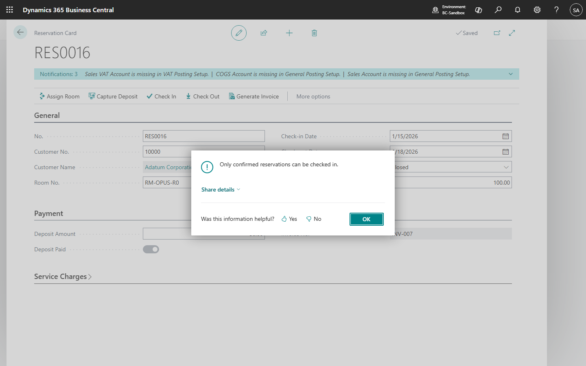
CheckIn: if Reservation.Status <> Reservation.Status::Confirmed then Error('Only confirmed reservations can be checked in.');
CheckOut: if Reservation.Status <> Reservation.Status::Occupied then Error('Only occupied reservations can be checked out.');if Reservation.Status <> Reservation.Status::Closed then Error('Reservation must be closed before generating an invoice.');Opus 4.7 · run 0Pass
if ReservationHeader.Status <> "Hotel Reservation Status"::Confirmed then Error('Check-In is only allowed for reservations with status Confirmed. Current status: %1.', ReservationHeader.Status);if ReservationHeader.Status <> "Hotel Reservation Status"::Occupied then Error('Check-Out is only allowed for reservations with status Occupied. ...');if ReservationHeader.Status <> "Hotel Reservation Status"::Closed then Error('An invoice can only be generated for a Closed reservation. ...');trigger OnModify if (xRec.Status = ::Closed) and (Status <> ::Closed) then Error('You cannot re-open a Closed reservation.');›P-02Critical fields are validated (TestField or equivalent) before posting or state-change procedures run.PassPassPass
Opus 4.7 · run 0Pass
TestMandatoryFields(): TestDateRange(); if "Customer No." = '' then Error(...); if "Room No." = '' then Error(...);
CheckIn: TestField("Deposit Captured", true); TestField("Room No.");
GenerateInvoice: TestField("Customer No.");
CaptureFinalPayment: TestField("Invoice No.");Opus 4.7 · run 0Pass
AssignRoom: Reservation.TestField("Room No."); TestField("Check-in Date"); TestField("Check-out Date");
CaptureDeposit: TestField("Deposit Amount"); TestField("Customer No.");
CheckIn: TestField("Room No."); TestField("Customer No.");Reservation.TestField("Customer No."); TestField("Room No."); TestField("Check-in Date"); TestField("Check-out Date");Opus 4.7 · run 0Pass
if ReservationHeader."Room No." = '' then Error('A Room must be assigned before checking in.');
if not Room.Get(ReservationHeader."Room No.") then Error('Room %1 does not exist.', ...);if ReservationHeader."Customer No." = '' then Error('A Customer No. must be assigned to the reservation before generating an invoice.');field(2/4/5/6) NotBlank = true on Customer No., Room No., Check-In Date, Check-Out Date.›P-03Money moves only through standard BC posting; no direct inserts into ledger tables and posted documents remain traceable.FailFailPass
Opus 4.7 · run 0Fail
SalesHeader.Init(); SalesHeader."Document Type" := ::Invoice; SalesHeader.Insert(true);
SalesHeader.Validate("Sell-to Customer No.", Reservation."Customer No.");
... // No SalesPost.Run(SalesHeader) anywherelocal procedure InsertPaymentLedger(...) var PaymentLedger: Record "Hotel Payment Ledger"; begin PaymentLedger.Init(); ... PaymentLedger.Insert(true); end;
// Direct insert into the candidate's custom Payment Ledger; every deposit/final-payment/refund goes here, NOT through a Bank/Cash receipt journal.Opus 4.7 · run 0Fail
SalesHeader.Insert(true); ... SalesLine.Insert(true); // never Codeunit::"Sales-Post"GenJnlLine.Insert(true); // never Codeunit::"Gen. Jnl.-Post Line"Opus 4.7 · run 0Pass
SalesHeader.Init(); SalesHeader.Validate("Document Type", ::Invoice); SalesHeader.Insert(true); ... SalesLine.Validate("Document No.", SalesHeader."No."); SalesLine.Insert(true); // No GLEntry/CustLedgerEntry inserts anywhere.field(50100; "Hotel Reservation No."; Code[20]) TableRelation = "Reservation Header"."Reservation No.";›P-04Every system-blocked action surfaces a user-readable error identifying what failed and why.PassPassPass
Opus 4.7 · run 0Pass
Error('Room %1 is already assigned to an overlapping reservation.', RoomNo);
Error('Check-out date must be after check-in date.');
Error('Customer No. must be specified.'); Error('Room No. must be specified.');
Error('Invoice %1 has already been generated for reservation %2.', ...);
Error('Final payment amount %1 exceeds remaining amount due %2.', ...);
Error('Refund processing is restricted to Finance and Admin hotel roles.');Opus 4.7 · run 0Pass
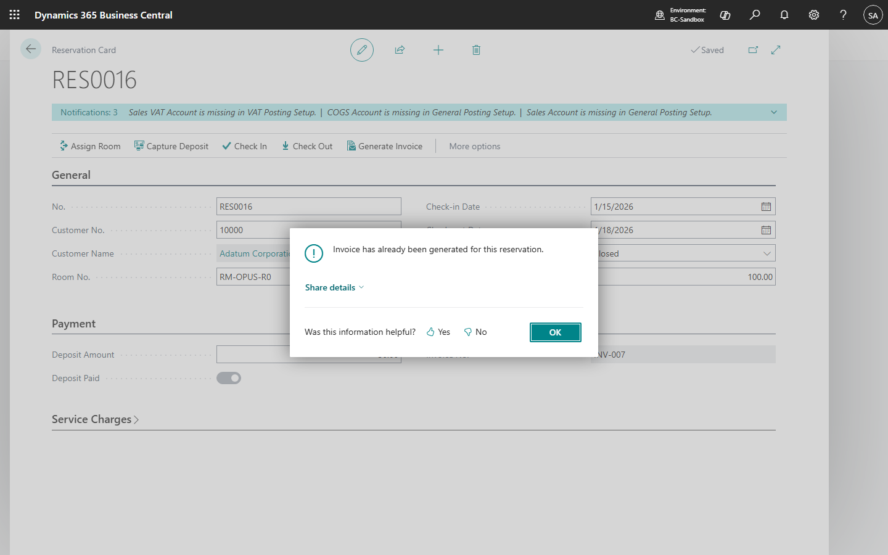
Errors include: 'Room %1 is not available for the selected dates.', 'Deposit has already been captured for this reservation.', 'Only confirmed reservations can be checked in.', 'Invoice has already been generated for this reservation.', 'You do not have permission to process refunds...'Opus 4.7 · run 0Pass
Error('Overbooking prevented: Room %1 is already reserved by another guest for a period that overlaps %2 to %3.\\Please choose a different room or adjust the Check-In / Check-Out dates...');Error('Access denied.\\Processing refunds is restricted to users with the ''HOTEL-FINANCE'' or ''HOTEL-ADMIN'' permission set.\\Front Desk users are not authorised to process refunds.\\Please contact your Finance department.');Error('Invoice generation is blocked for Reservation %1: invoice %2 has already been generated. Duplicate invoices are not permitted.', ...);›P-05Real-world bad inputs are blocked: failed payment cannot report success, an invoice cannot be generated twice, and zero/negative amounts are rejected.PassFailPass
Opus 4.7 · run 0Pass
// Duplicate invoice block
if Reservation."Invoice No." <> '' then Error('Invoice %1 has already been generated for reservation %2.', ...);// Failed-payment cannot be reported as success
Reservation."Deposit Captured" := PaymentSucceeded;
Reservation."Deposit Payment Failed" := not PaymentSucceeded;
if not PaymentSucceeded then Message('Deposit payment failed...');if Amount <= 0 then Error('Deposit amount must be positive.');
if Amount <= 0 then Error('Final payment amount must be positive.');
if Amount <= 0 then Error('Refund amount must be positive.');Opus 4.7 · run 0Fail
if Reservation."Invoice No." <> '' then Error('Invoice has already been generated for this reservation.'); // duplicate invoice guard ✓if not GenJnlBatch.FindFirst() then Error('No general journal batch found.');
GenJnlLine.Insert(true);
Reservation."Deposit Paid" := true; // unconditional success — no failure detectionfield(20; Amount; Decimal) { MinValue = 0; } // allows ZERO amounts — only blocks negativesOpus 4.7 · run 0Pass
if ReservationHeader."Invoice No." <> '' then Error('Invoice generation is blocked for Reservation %1: invoice %2 has already been generated. Duplicate invoices are not permitted.');Enabled = (Rec."Status" = "Hotel Reservation Status"::Closed) and (Rec."Invoice No." = ''); // UI duplicate guard// on simulated failure: Payment Status := Failed; Error('Deposit capture FAILED... Check-In and Invoice Generation are blocked until resolved.');field(4; Quantity) MinValue = 0; field(5; "Unit Price") MinValue = 0; field(8; "Deposit Amount") MinValue = 0 (on Header).›P-06Refund processing is restricted to Finance and Front Desk is blocked from refund actions.PassPassPass
Opus 4.7 · run 0Pass prerequisite not set up
codeunit 50100 "Hotel Security Mgt." procedure RequireFinance() begin if not IsFinanceUser() then Error('Refund processing is restricted to Finance and Admin hotel roles.'); end;
procedure IsFinanceUser(): Boolean var RoleSetup: Record "Hotel User Role Setup"; begin if not RoleSetup.Get(UserSecurityId()) then exit(false); exit(RoleSetup.Role in [::Finance, ::Admin]); end;procedure ProcessRefund(...) var SecurityMgt: Codeunit "Hotel Security Mgt."; begin SecurityMgt.RequireFinance(); Reservation.TestField(Status, Status::Closed); ...Opus 4.7 · run 0Pass
procedure CanProcessRefund(): Boolean
begin if UserSetup.Get(UserId) then exit(UserSetup."Allow Refund Processing"); exit(false); end;if not PermissionMgt.CanProcessRefund() then Error('You do not have permission to process refunds. Only Finance role can perform this action.');field(50100; "Allow Refund Processing"; Boolean) { DataClassification = CustomerContent; }Opus 4.7 · run 0Pass
// Process Refund codeunit intentionally NOT listed; HOTEL-FRONTDESK has only R on Hotel Setupaction(ProcessRefund) { AccessByPermission = tabledata "Hotel Setup" = M; // hidden from HOTEL-FRONTDESKprocedure ProcessRefund(...)
HotelPermissionMgt.CheckRefundPermission(); // Layer 2 hard error for non-Finance/Adminprocedure CheckRefundPermission() if not HasFinancePermission() then Error('... Processing refunds is restricted to ... HOTEL-FINANCE or HOTEL-ADMIN... Front Desk users are not authorised to process refunds...');›P-07The solution is organized into a conventional folder/file structure with one logical object per file.FailFailFail
Opus 4.7 · run 0Fail
HotelManagement.al — a SINGLE 1283-line file containing 5 enums + 6 tables + 2 codeunits + 7 pages + 3 permission setsOpus 4.7 · run 0Fail
All 16 .al files live in a SINGLE flat src/ folder — no tables/, pages/, codeunits/, enums/, permissionsets/ subfolders. One object per file is OK, but object kinds are not grouped into dedicated folders.Opus 4.7 · run 0Fail
All 35 objects in a single Src/ folder, one logical object per file with kind-prefixed filenames: Table50100.Room.al, Page50100.RoomList.al, Codeunit50100.HotelReservationMgt.al, Enum50100.RoomType.al, PermissionSet50100.HotelAdmin.al, TableExt50100.SalesHeaderReservation.alTwo outcomes per criterion (PASS / FAIL)
- Pass — runnable AND verified to meet the spec, OR an unverifiable case the dynamic resolution rule resolves to PASS (env / platform / spec blocker and affirmative L4 code evidence the code is correct).
- Fail — not runnable, runnable-but-wrong, destructive / insecure, OR an unverifiable case with no affirmative code evidence. Attribution agent_code when the agent owns the defect.
Unverifiable (“inconclusive”) cases are dynamically resolved: PASS only when the blocker is genuinely not the agent’s fault and a code citation proves correctness; otherwise FAIL. The harness re-enforces this rule (a claimed PASS lacking either is downgraded to FAIL, shown as resolution invalid). Axis score = 10 × Σ(weight × passbit) ÷ Σ(weight) (max-scaled at the final step). Council verdict = majority of member votes (ties → FAIL). Total blends Functional 50% / Code quality 10% / Spec 10% / Production readiness 20%; an overall PASS requires the total ≥ 7.0 and every blocking criterion passing.
Verification hierarchy (L1 → L4)
Real Business Central consultants verify in this order; the grader does too:
- L1 — Find Entries / OData state. The database is the source of truth. After any posting action, query
G_LEntries,Customer_Ledger_Entry, posted invoices. - L2 — Test codeunits with Library Assert. If the agent shipped tests, the grader runs them.
- L3 — UI walkthrough via Playwright. User-realistic; captures screenshots for evidence.
- L4 — Static AL review. Always available backstop, and the source of the code evidence the resolution rule needs. PASS if code invokes the right standard codeunits (e.g.
SalesPost.Run,NoSeriesMgt.GetNextNo); FAIL if implementation is a stub, fabricates posting, reinvents BC built-ins, or won’t build.
Cross-validation
Every task is graded by a council of 2–4 independent grader runs (Claude Opus 4.7 + GPT-5.5 ensemble). Second runs of each model are added on tasks where the first-run pair disagreed. The per-criterion verdict is the majority of member PASS/FAIL votes (ties resolve to FAIL); the axis score is then computed deterministically by max-scaling those passbits. Within-model variance is dampened by criterion-level voting.
Scoring axes
The overall score is a weighted blend of up to four axes. Each axis is scored deterministically by max-scaling its criteria’ PASS/FAIL verdicts, then combined — normalized over the axes a task was actually graded on.
- Functional correctness (50%): does the published extension behave correctly at runtime? Verified via the BC web client and OData queries.
- Code quality (10%): does the implementation use the right standard BC codeunits and AL idioms rather than stubs, fabricated posting, or reinvented built-ins?
- Spec understanding (10%): does the submission reflect the requirements as specified — the right entities, fields, workflows and edge cases?
- Production readiness (20%): would the submission be safe to deploy — status-flow enforcement, field validation, posting integrity, error messages, edge-case handling.